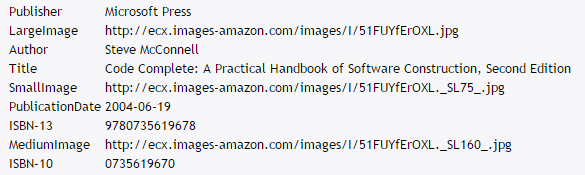
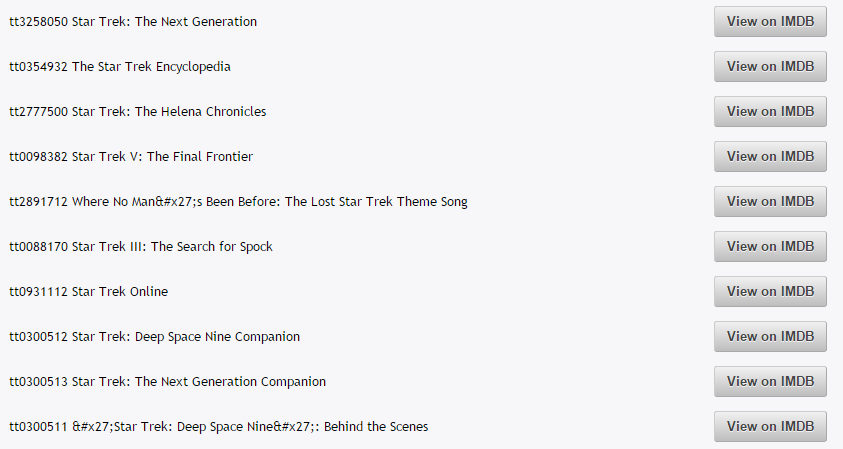

Users can enter an ISBN-10 or ISBN-13 to retrieve information about a book from Amazon by typing Lookup Book by ISBN.
If the ISBN is valid, metadata will be retrieved. If the ISBN is invalid, no data will be shown.
Users can enter a movie title to retrieve information about it by typing Lookup Movie by Title.
All related results will be returned with links to their IMDB page.
